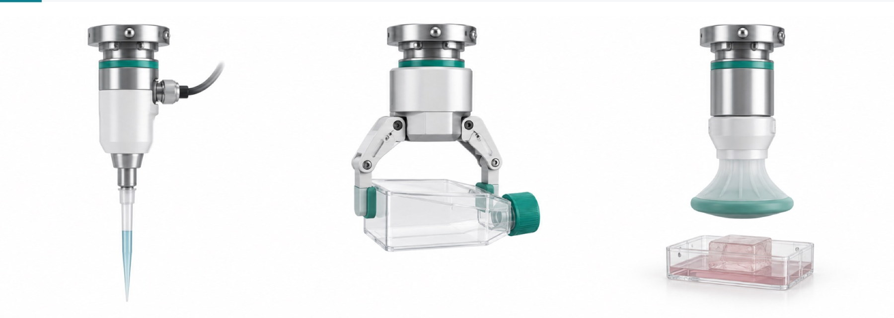

Labor-intensive
Every program needs cell handling done by hand, repeatedly, by trained people — throughput is capped by hands available, not by science.
3rd Cell AI-Native Cell Manufacturing & CDMO
3rd Cell is building the next generation of AI-native Contract Development and Manufacturing Organizations (CDMOs), integrating artificial intelligence, advanced robotics and stem cell engineering to transform how human cells are cultured, differentiated and manufactured at scale.
3rdcell.ai01 Company Overview
As regenerative medicine, cell therapies and precision medicine continue to advance, scalable cell manufacturing is becoming a critical foundation of the life sciences industry. However, conventional cell manufacturing remains labor-intensive, costly, difficult to standardize and challenging to scale.
3rd Cell aims to address these challenges by combining advanced robotics, AI-driven process control, automated cell culture, real-time biological monitoring and intelligent manufacturing optimization into one integrated platform.
The company's vision is to transform traditional laboratory workflows into programmable, reproducible and scalable manufacturing systems.

02 The Challenge
Every program needs cell handling done by hand, repeatedly, by trained people — throughput is capped by hands available, not by science.
A protocol that works in one lab is re-taught, re-mapped and re-validated at the next site, and none of that is new science.
Enlarging a vessel changes shear, mixing, oxygen transfer and the medium itself — performance has to be re-developed instead of inherited.

03 The Platform
Rather than a single fixed process, 3rd Cell runs a modular, adaptive infrastructure able to support diverse cell types and their distinct manufacturing requirements.
Collaborative arms and mobile bases that reach a lab's existing incubators, hoods and microscopes.
Differentiation and dosing run from written, versioned protocols instead of hand-taught motion.
Seeding, feeding, passaging and harvest executed unattended, well by well.
Continuous in-process sensing keeps every batch inside specification, from expansion to release.
A continuously learning system turns biological data into better quality, consistency and yield.
04 Technology Roadmap
Beginning with induced pluripotent stem cells (iPSCs) and mesenchymal stromal cells (MSCs), 3rd Cell plans to expand into immune cell manufacturing, including CAR-T and NK cells — providing next-generation manufacturing solutions for biotechnology companies, pharmaceutical developers and research institutions.
Induced pluripotent stem cells — the starting point, and the hardest to keep consistent.
Mesenchymal stromal cells — scaling a proven culture unit rather than a bigger vessel.
Immune cell manufacturing — the same interfaces and motions, adapted to a new cell type.

05 Leadership Team
3rd Cell brings together an international, multidisciplinary team spanning cell medicine, artificial intelligence, robotics, advanced manufacturing and business leadership.
Two Ivy League–trained postdoctoral researchers in interdisciplinary biomedical sciences, with over 22 years of combined experience in stem cell research and clinical translation.
Leading experts in cell medicine, spanning directed differentiation, cardiovascular and rare disease, tissue engineering and cell manufacturing.
PhD- and master's-level robotics specialists from prestigious universities, and international award winners in AI robotics competitions.
A business leader holding both an MBA and a master's degree in sociology, covering international business development and commercial execution.
With over 22 years of relevant experience in stem cell research and clinical translation — complemented by expertise in intelligent robotics, AI systems, advanced manufacturing and international business development — the team bridges cutting-edge biological research with engineering innovation and commercial execution.

06 Our Vision
3rd Cell aims to go beyond laboratory automation to establish a continuously learning, optimizing and scalable AI-native cell manufacturing infrastructure.
By connecting biological science, artificial intelligence and robotic manufacturing, the company seeks to transform cell production from labor-intensive laboratory processes into intelligent industrial systems — enabling the next generation of cell therapies, regenerative medicine and precision healthcare.
3rd Cell — Engineering the Future of Cell Manufacturing.
Partnerships, manufacturing programs and conference enquiries.